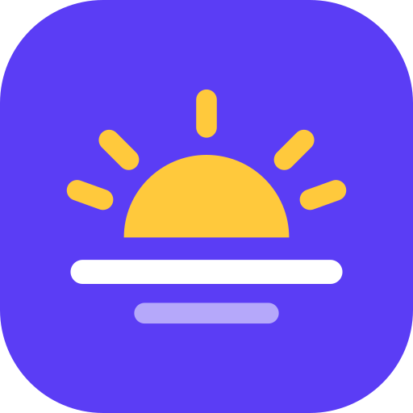
קמתי
השעון המעורר שלא מוותרשעון מעורר שאין בו כפתור עצירה. כדי לכבות אותו פותרים תרגיל, הולכים כמה צעדים, מנערים את הטלפון או מקלידים "מודה אני". הווליום נעול, ואם מכבים את הטלפון, השעון חוזר לצלצל כשהוא נדלק.
הורד 9 פעמים כל המספרים
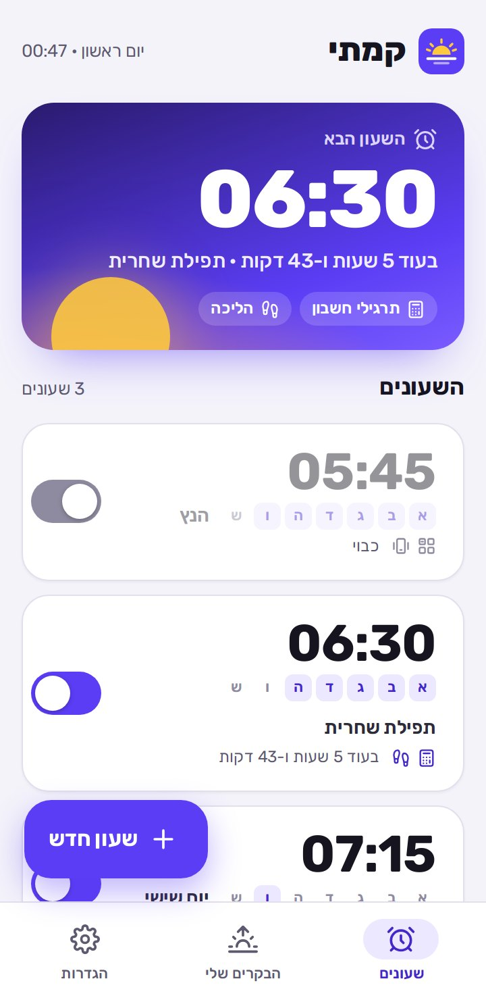
מה חדש
גרסה 1.0- הגרסה הראשונה של קמתי: שעון מעורר שנכבה רק אחרי משימה
- 7 משימות: תרגילי חשבון, הליכה, ניעור, הקלדת "מודה אני", משחק זיכרון, מספרים לפי הסדר וצילום מקום בבית
- הווליום נעול על מקסימום, ו"חזור", "בית" וכיבוי הטלפון לא עוצרים את השעון
- בדיקת ערנות: כמה דקות אחרי שקמת, "אתה עדיין ער?"
- עובד בלי אינטרנט, גם בנגנים ובטלפונים בלי מצלמה
עובד לגמרי בלי אינטרנט
- השעונים, הצלצול, כל המשימות ובדיקת הערנות עובדים בלי אינטרנט, גם במצב טיסה.
- הצעדים והניעורים נספרים בחיישן של הטלפון, והצילום נבדק בתוך הטלפון. שום תמונה לא יוצאת ממנו.
- היומן "הבקרים שלי" נשמר רק בטלפון.
- שליחת האפליקציה לחבר כקובץ עובדת בלי אינטרנט.
צריך אינטרנט רק כדי להוריד עדכון ולשלוח פנייה למפתח. פנייה שנכתבה בלי אינטרנט נשלחת לבד כשהחיבור חוזר.
התקנה
- מורידים
לוחצים "הורדה לאנדרואיד" למעלה. הקובץ kamti.apk יורד לטלפון או לנגן.
- מתקינים
פותחים את הקובץ מההתראות או מתיקיית ההורדות. בפעם הראשונה מאשרים "התקנה ממקור לא ידוע".
- מאשרים
בפתיחה הראשונה קמתי מבקשת כמה אישורים מהטלפון. לכל אחד יש כפתור "אישור". מה כל אישור עושה
- מגדירים שעון
בוחרים שעה, ימים ומשימה, ולוחצים "נסה עכשיו" כדי להרגיש איך זה עובד.
אם מופיעה אזהרה של Google Play Protect על אפליקציה לא מוכרת, בוחרים להתקין בכל זאת. זה קורה בכל אפליקציה שלא הורדה מחנות Google Play. את העדכונים הבאים לא צריך להוריד: הם נכנסים מתוך האפליקציה.
שעונים
כל השעונים במקום אחד, והשעון הבא בגדול למעלה.
- השעון הבאמתי הוא יצלצל ("בעוד 7 שעות ו-43 דקות"), השם שלו, ואילו משימות מחכות לכם.
- כרטיס שעוןהשעה, הימים (המודגשים הם הימים שבהם הוא מצלצל), השם, והמשימות. לחיצה פותחת את הגדרת השעון.
- המתגמדליק או מכבה את השעון בלי למחוק אותו. מדליקים, ומיד מופיעה הודעה מתי הוא יצלצל.
- חסרים אישוריםפס צהוב מופיע רק אם חסר אישור שבלעדיו השעון אולי לא יצלצל. "לאשר" פותח את מסך האישורים.
- + שעון חדששעון חדש עם שעה, ימים ומשימה.
הגדרת שעון
הכל במסך אחד: מתי, באילו ימים, ומה צריך לעשות כדי לכבות.
- השעההחצים מעל ומתחת משנים בדקה או בשעה (לחיצה ארוכה רצה מהר). לחיצה על המספר פותחת רשת לבחירה מהירה. מתחת כתוב בעוד כמה זמן השעון יצלצל.
- ימיםלוחצים על האותיות א׳ עד ש׳, או בוחרים מהר: "א׳–ו׳", "כל יום", או "פעם אחת" (בלי ימים: מצלצל פעם אחת ונכבה).
- שם השעוןלא חובה. למשל "תפילת שחרית". השם מופיע כשהשעון מצלצל.
- משימות לכיבויעד 3 משימות, אחת אחרי השנייה. לחיצה על משימה משנה את הרמה או הכמות, ✕ מוריד אותה. כל המשימות
- צליל5 צלילים של קמתי, הצלצול של הטלפון, או שיר והקלטה מהקבצים שלכם. ▶ משמיע לכמה שניות.
- רטטרטט חזק יחד עם הצלצול.
- דחייה (נודניק)כברירת מחדל אין דחייה: רק המשימה מכבה. אפשר לאפשר עד 3 דחיות של 3, 5 או 10 דקות. גם אחרי הדחייה המשימה מחכה.
- בדיקת ערנותכמה דקות אחרי שקמתם קופץ "אתה עדיין ער?". איך זה עובד
- דילוג על הפעם הבאהבשעון שחוזר כל שבוע: יום חופש? מדלגים על פעם אחת, והשעון חוזר לעצמו אחר כך.
- נסה עכשיוהשעון מצלצל בעוד 5 שניות, עם המשימות שבחרתם, כדי להרגיש איך זה. גם הניסיון נכבה רק אחרי המשימה.
- שמירהשומר, ומראה בהודעה קצרה מתי השעון יצלצל.
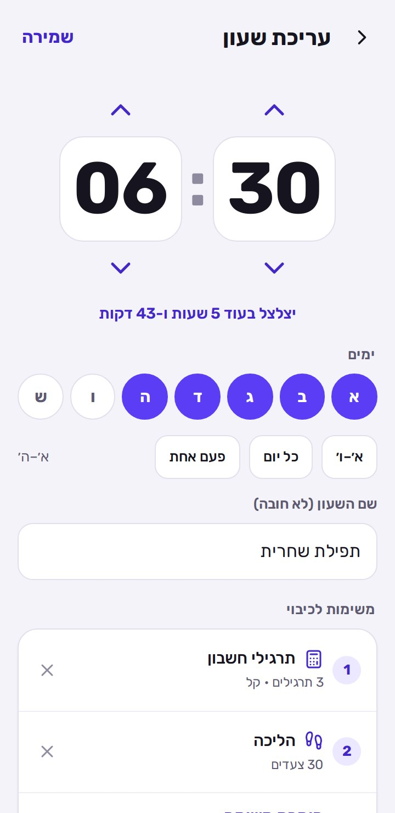
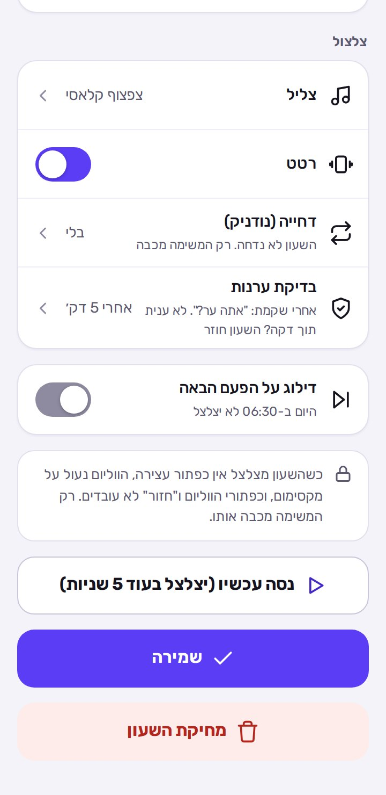
המשימות שמכבות את השעון
כולן קלות, אבל אי אפשר לעשות אותן מתוך שינה. בוחרים עד 3, והן מגיעות אחת אחרי השנייה.
- תרגילי חשבון1 עד 10 תרגילים. קל (23 + 14), בינוני (47 + 38 או 7 × 8) או קשה (14 × 3 + 27). מקלידים במקשים הגדולים, או במקשי המספרים בטלפון עם מקשים. טעיתם 3 פעמים? מקבלים תרגיל אחר.
- הליכה15 עד 100 צעדים. קמים והולכים עם הטלפון ביד או בכיס, וכל צעד נספר בחיישן התנועה.
- ניעור הטלפון20 עד 80 ניעורים חזקים.
- אף פעם לא נתקעיםאם חיישן התנועה לא עונה, המשימה מתחלפת לבד לתרגילים, וכתוב על המסך למה.
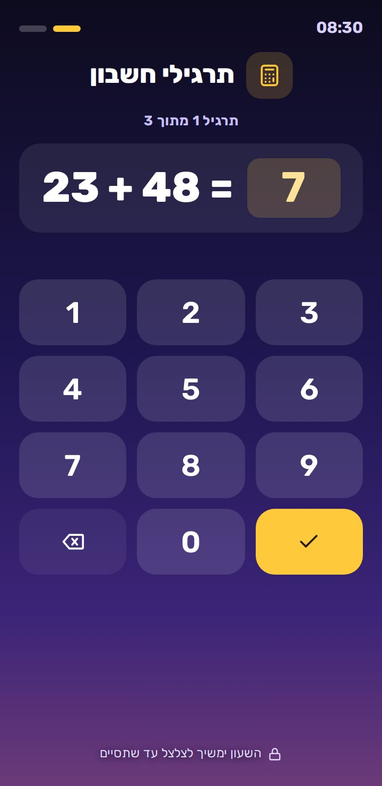
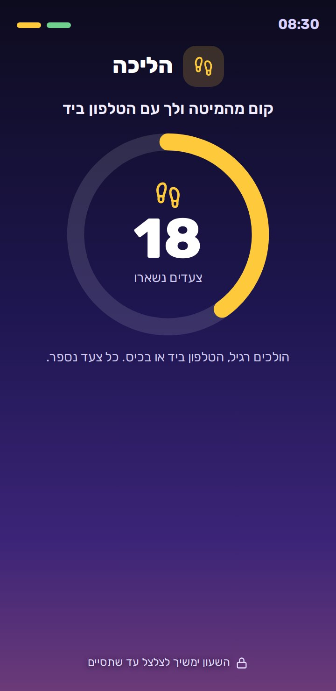
עוד משימות
- הקלדת משפט"מודה אני לפניך מלך חי וקיים…", או משפט בוקר טוב קצר שמתחלף כל יום. מה שכבר הוקלד נכון נצבע בירוק. בלי ניקוד ובלי סימני פיסוק.
- משחק זיכרוןריבועים נדלקים אחד אחרי השני, ואז לוחצים עליהם באותו סדר. רצף של 3 עד 6, בסבב אחד עד שלושה. טעות? מסתכלים שוב על רצף חדש.
- מספרים לפי הסדרלוח מבולגן של מספרים עד 9, 12 או 16. לוחצים מ-1 והלאה.
- צילום מקום בביתכשמגדירים את השעון מצלמים מקום קבוע רחוק מהמיטה: הכיור, הקומקום, המקרר. בבוקר צריך לקום ולצלם את אותו מקום, והטלפון בודק בעצמו (בלי אינטרנט) שזה אותו מקום. 3 צילומים לא הצליחו? אפשר לעבור ל-5 תרגילים.
- רק במכשיר עם מצלמהבנגן או בטלפון בלי מצלמה, משימת הצילום פשוט לא מופיעה.
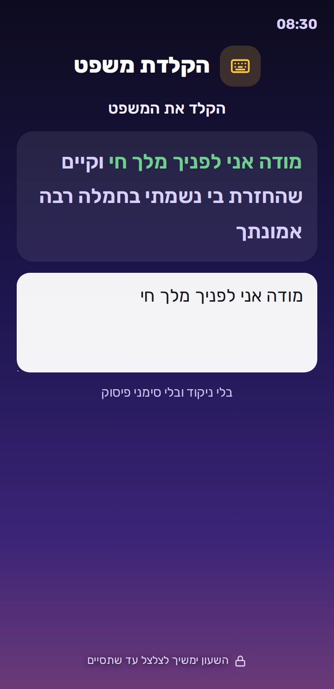
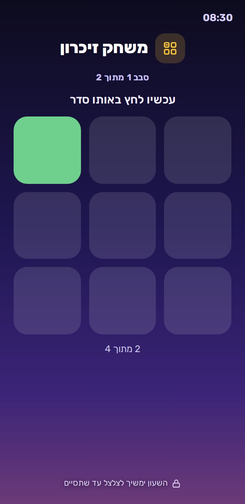
כשהשעון מצלצל
השעון מופיע מעל מסך הנעילה, ויש בו רק כפתור אחד: "מתחילים". הצלצול לא נפסק עד שהמשימות נגמרו.
- אין כפתור עצירה, ואין "ביטול" בהתראה.
- הווליום עולה למקסימום וננעל: כפתורי הווליום לא עובדים, וגם הורדה מההגדרות חוזרת לבד. אחרי שקמתם הווליום חוזר למה שהיה.
- "חזור" לא עובד. "בית" או אפליקציה אחרת? השעון קופץ חזרה תוך שניות (צריך את האישור "הצגה מעל אפליקציות אחרות").
- כיביתם את הטלפון? כשהוא נדלק, השעון ממשיך לצלצל. וגם אם הגיע זמן של שעון בזמן שהטלפון היה כבוי (בשעה האחרונה), הוא מצלצל מיד כשהטלפון נדלק.
- מתחיליםפותח את המשימה הראשונה. למעלה רואים כמה משימות נשארו.
- דחייהמופיע רק אם אפשרתם דחייה בשעון הזה, וכתוב כמה דחיות נשארו.
- קמת! בוקר טובאחרי המשימה האחרונה: כמה זמן לקח לקום, "מודה אני", ומתי תגיע בדיקת הערנות.
- אחרי שעהאם אף אחד לא כיבה את השעון במשך שעה (למשל, לא הייתם בבית), הוא נעצר לבד.
מה שאנדרואיד לא מאפשר לאף אפליקציה לחסום: "עצירה בכוח" מתוך הגדרות הטלפון, והסרת האפליקציה. כל השאר נעול.
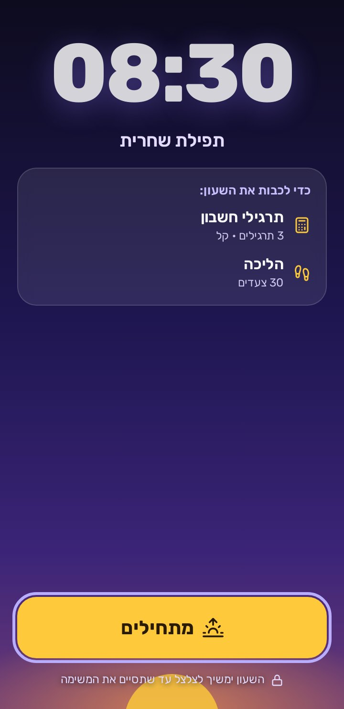
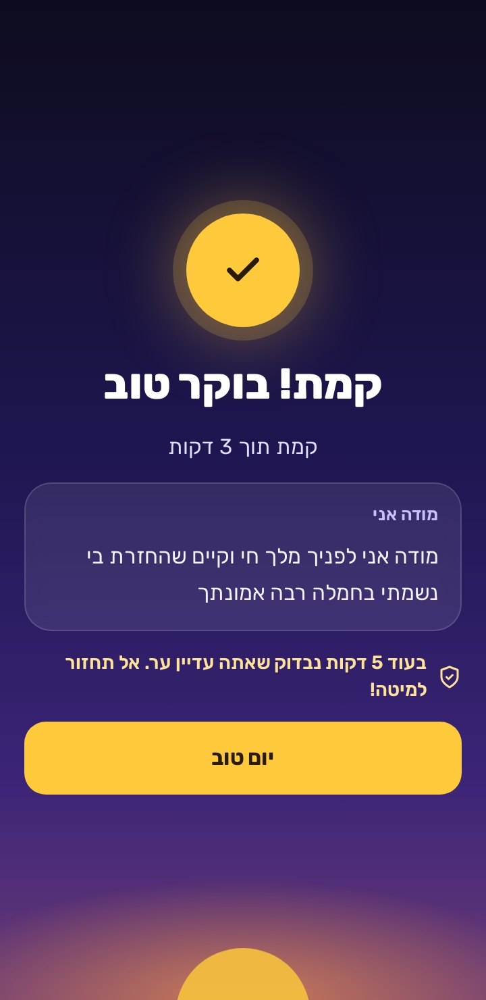
בדיקת ערנות
הנודניק שממשיך גם אחרי שכיביתם: למקרה שפתרתם את המשימה וחזרתם למיטה.
- מתי3, 5, 10 או 15 דקות אחרי שסיימתם את המשימות (מומלץ 5). אפשר גם לכבות.
- מה קורהצפצוף, ומסך "אתה עדיין ער?" עם ספירה לאחור של דקה.
- כן, אני ער!לוחצים, וזהו: "מעולה, אתה ער!".
- לא לחצתם?השעון חוזר לצלצל במלוא העוצמה, עם המשימות מההתחלה. ביומן כתוב "נרדם שוב".
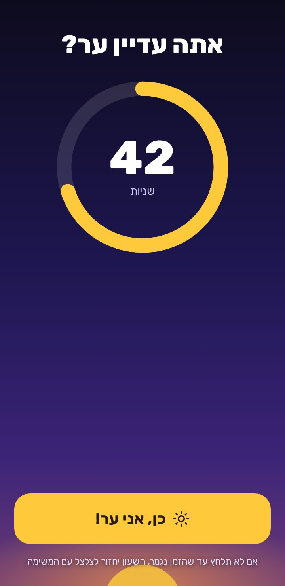
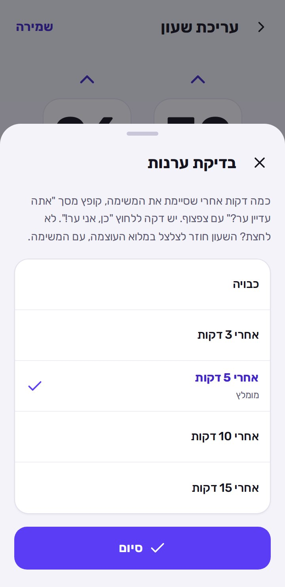
גם בנגן ובטלפון כשר
קמתי עובדת בכל מכשיר אנדרואיד, גם בנגנים ובטלפונים בלי מצלמה ובלי אינטרנט.
- בלי מצלמהמשימת הצילום לא מופיעה. כל השאר עובד.
- בלי חיישן תנועההליכה וניעור לא מופיעות, ובשעון קיים הן מתחלפות לבד בתרגילי חשבון.
- טלפון עם מקשיםהתרגילים עובדים גם במקשי המספרים, והחצים של הטלפון עוברים בין הכפתורים.
- שיר שלכםבצליל בוחרים "שיר או הקלטה מהטלפון": כל קובץ שמע שיש בנגן.
- אישוריםבחלק מהנגנים חלק ממסכי האישור לא קיימים. מה שלא מופיע במסך האישורים, לא נדרש.
בהגדרות של קמתי כתוב מה יש במכשיר שלכם: מצלמה וחיישן תנועה.
האישורים
כדי שהשעון יצלצל בזמן, יופיע מעל הנעילה ויחזור אם יוצאים ממנו, הטלפון צריך לאשר כמה דברים. כל "אישור" פותח מסך של הטלפון: מאשרים וחוזרים.
- התראותכדי שהשעון יופיע על המסך כשהוא מצלצל.
- שעונים מעורריםכדי שהשעון יצלצל בדיוק בזמן, גם כשהטלפון ישן.
- מסך מלא מעל הנעילהכדי שהמשימה תופיע גם כשהטלפון נעול (אנדרואיד 14 ומעלה).
- הצגה מעל אפליקציות אחרותמומלץ. בזכותו השעון קופץ חזרה אם לוחצים "בית" או עוברים לאפליקציה אחרת.
- בלי הגבלת סוללהמומלץ. כדי שהטלפון לא ירדים את קמתי בלילה.
אישור שכבר ניתן מסומן "מאושר". אם חסר אישור חשוב, מופיע פס צהוב במסך השעונים.
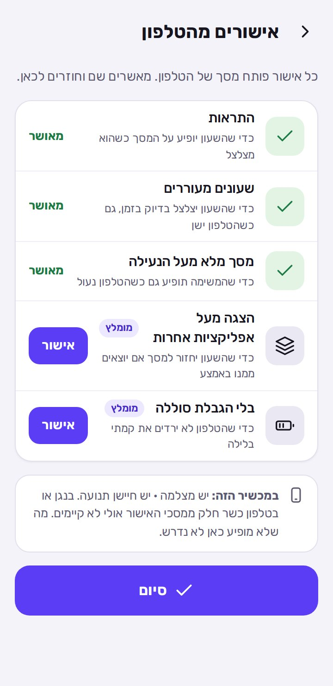
הבקרים שלי
כמה זמן לקח לכם לקום בכל בוקר.
- בקרים השבועכמה פעמים קמתם עם קמתי ב-7 הימים האחרונים.
- דקות בממוצע לקוםמהצלצול הראשון ועד שסיימתם את המשימות, כולל דחיות.
- בדיקות ערנותכמה בדיקות עברתם מתוך כמה.
- כל בוקרמתי צלצל, מתי קמתם, ותגיות: "דחייה", "עבר בדיקה" או "נרדם שוב". המספר בצד ירוק כשקמתם מהר, וצהוב כשלקח 10 דקות או יותר.
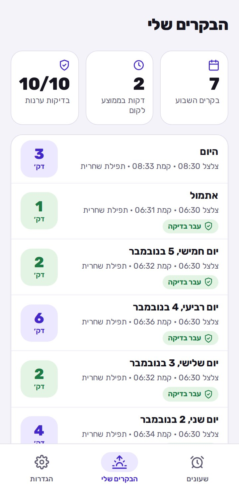
הגדרות
- מראהבהיר, כהה, או לפי הטלפון. מסך הצלצול תמיד כהה, כדי לא לסנוור בבוקר.
- אישורים מהטלפוןמה מאושר ומה חסר. האישורים
- צלצול לניסיוןצלצול אמיתי בעוד 5 שניות, עם תרגיל קל אחד.
- במכשיר הזההאם יש מצלמה וחיישן תנועה, ושם המכשיר.
- פנייה / הצעת ייעולהודעה ישירות למפתח. איך זה עובד
- בדיקת עדכוניםבודק אם יש גרסה חדשה. עדכונים
- שיתוף האפליקציהקישור לאתר, או האפליקציה עצמה כקובץ. שיתוף עם חברים
- אתר ההסברפותח את האתר הזה.
- בתחתיתהגרסה שמותקנת אצלכם, ו"פותח על ידי Itzko".
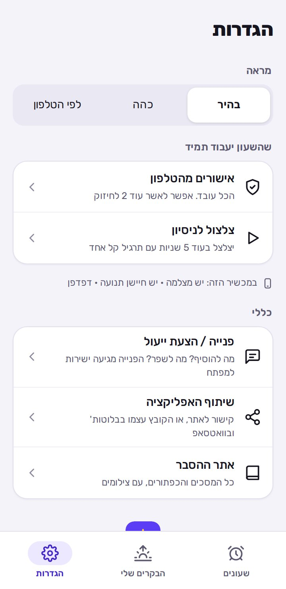
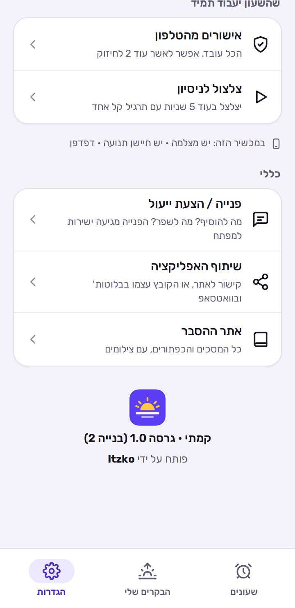
עדכונים
כשיש אינטרנט ויוצאת גרסה חדשה, בפתיחת האפליקציה קופץ חלון "גרסה חדשה" עם רשימה של מה השתנה.
- עדכון עכשיוהעדכון נכנס בתוך האפליקציה, והיא נפתחת מחדש בגרסה החדשה. לא צריך להתקין קובץ, וכל השעונים נשארים.
- הורדת הגרסה החדשהמופיע רק בגרסה שמשנה את החלק של אנדרואיד (הצלצול, הנעילה). מתקינים אותה פעם אחת מעל הקיימת, והשעונים נשארים.
- אחר כךסוגר את החלון. אפשר לעדכן מתי שרוצים.
- בדיקת עדכוניםהגדרות ← כללי ← בדיקת עדכונים
אם רוצים לבדוק בעצמכם.
בלי אינטרנט הכל ממשיך לעבוד כרגיל. העדכון מחכה לפעם הבאה שיהיה חיבור.
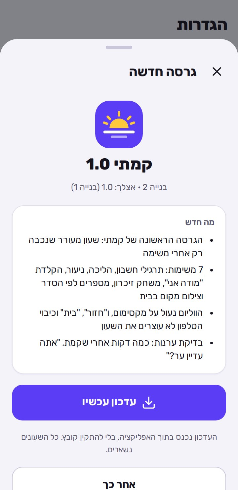
מה מבקשים מכם
להשתמש באפליקציה כרגיל, ולספר מה לא עבד, איזו משימה חסרה, ומה היה עוזר לכם לקום.
- איפההגדרות ← פנייה / הצעת ייעול
- מה ממלאיםסוג (הצעת ייעול, תקלה או אחר), שם, מייל, ומה רציתם להגיד.
- שליחת הפנייההפנייה מגיעה ישר למפתח. אם אין אינטרנט, היא נשמרת ונשלחת לבד כשהחיבור חוזר.
- טיפ לתקלותכתבו באיזה מכשיר (טלפון או נגן), מה קרה, ומה ציפיתם שיקרה.
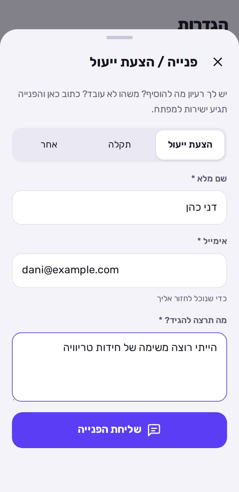
ומה עם אייפון?
קמתי היא לאנדרואיד בלבד. באייפון, אפל לא נותנת לאתר או לאפליקציה שהוסיפו למסך הבית לצלצל כשהם סגורים, להופיע מעל הנעילה או לנעול את הווליום. בלי זה אין שעון שאפשר לסמוך עליו, ולכן אין גרסה לאייפון.
פותח על ידי Itzko
קמתי היא אפליקציה עצמאית של Itzko: בלי פרסומות, בלי הרשמה, והשעונים והיומן נשארים אצלכם בטלפון. כל רעיון או תקלה מגיעים ישירות אליו דרך "פנייה / הצעת ייעול" בהגדרות של האפליקציה.